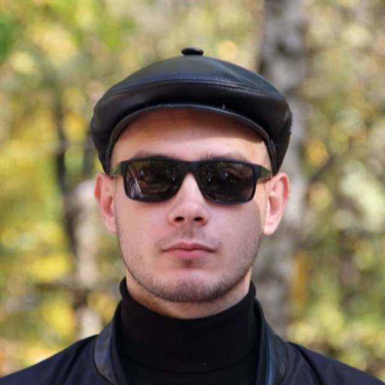

Кирилл Дьячков




Обо мне
Кем я являюсь:
Я являюсь студентом Самарского Университета, обучаюсь на Институте Информатики и Кибернетики, на направление ИБАС на втором курсе.
Обучаюсь в группе 6212-100503D, являюсь старостой этой группы.
Мои плюсы:
- Коммуникабельный
- Красивый
- Ответственный
- Заводной
- Постоянно на связи
Мои минусы:
- Нуждаюсь в частом общении
- Высокий и стукаюсь головой в помещениях с низкими потолками
- Обладаю криминальной внешностью
- Местами ленивый
- Нормально функционируют 9 пальцев на руках из 10
Мои достижения:
На первом курсе я и команда направления ИБАС взяли третье место на Кубке ИИК 2022. Также являюсь организатором мероприятия "День информатики и кибернетики".
Прошёл школу кураторов на базе базы отдыха "Полёт". Помимо этого, являюсь координатором команды
ИБАС на Кубке ИИК 2023 года.